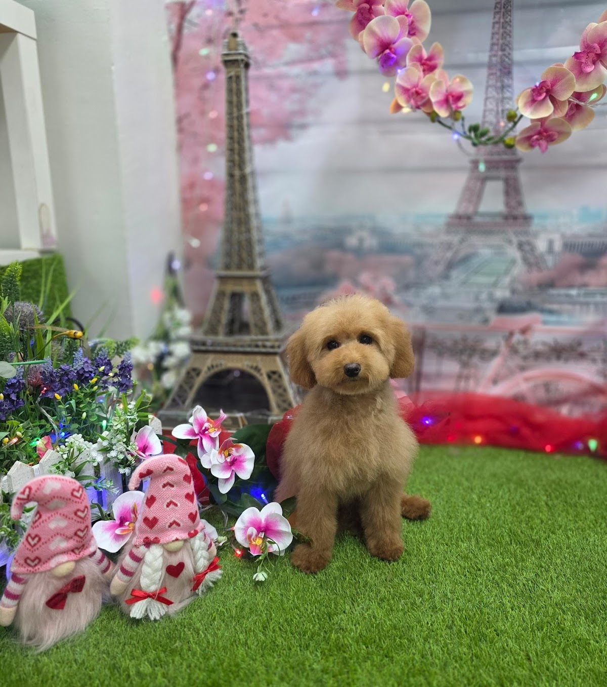
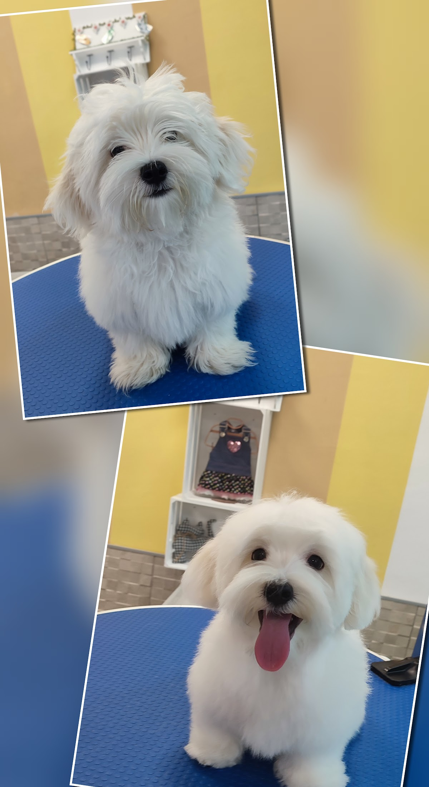
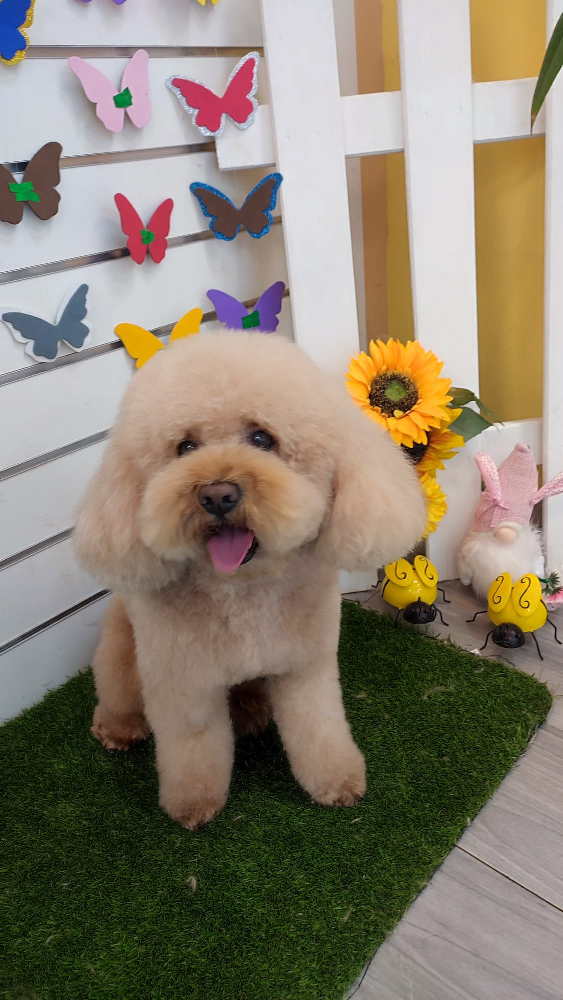
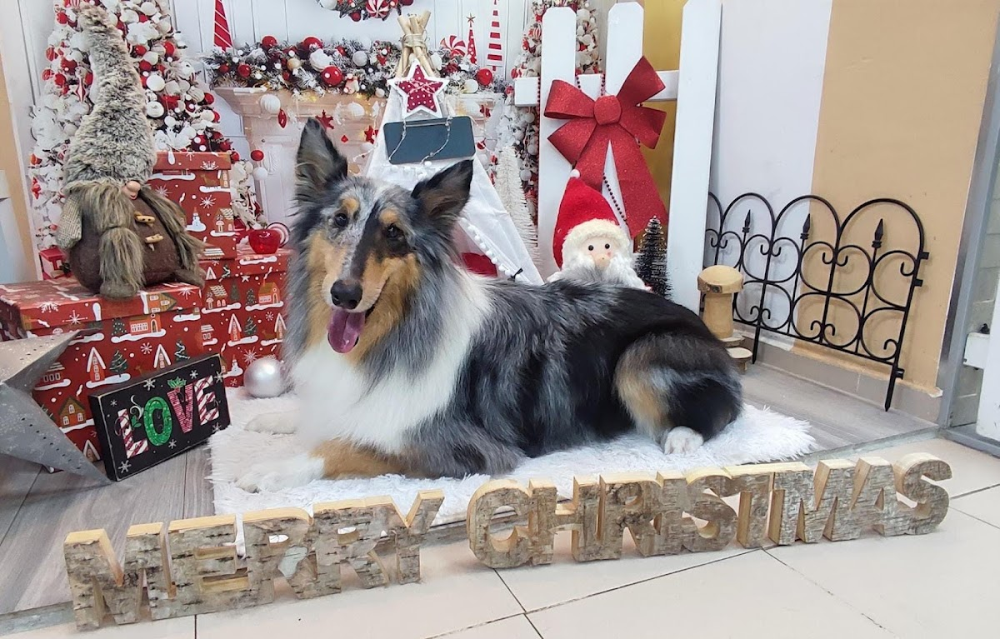
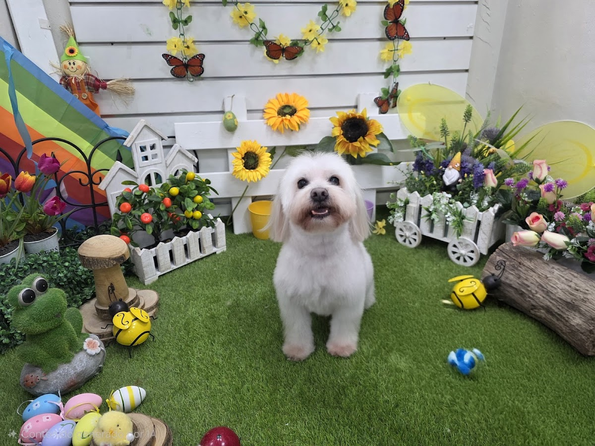
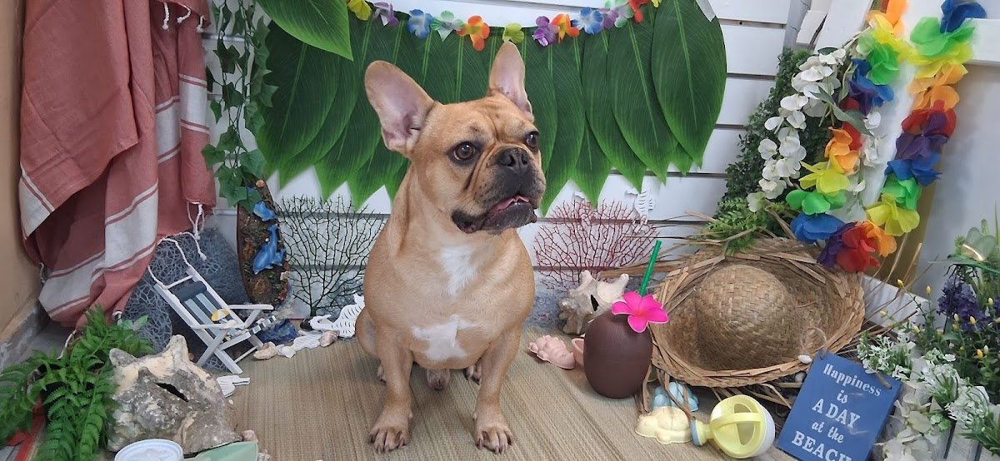
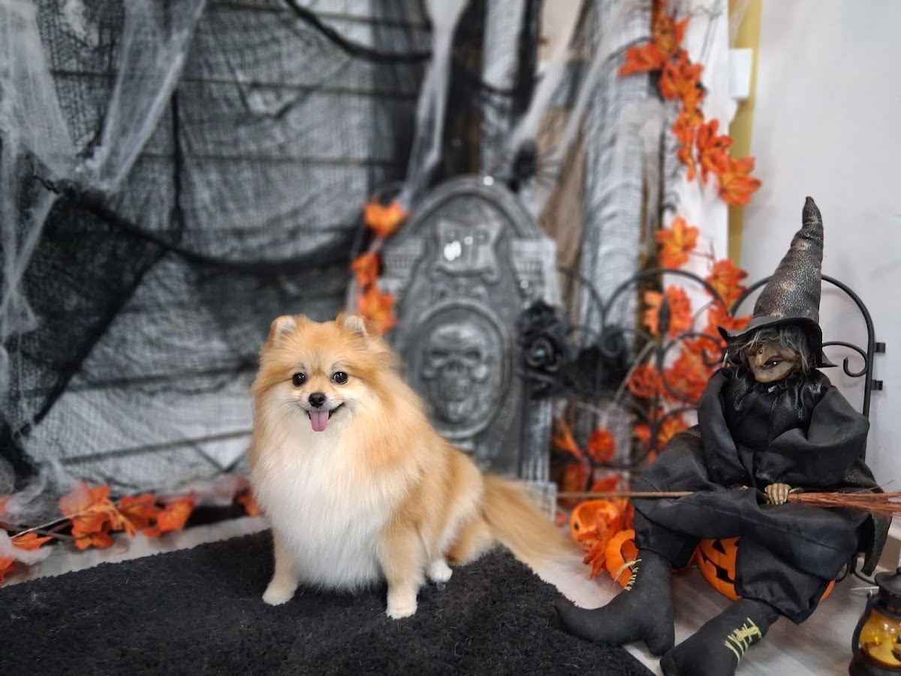
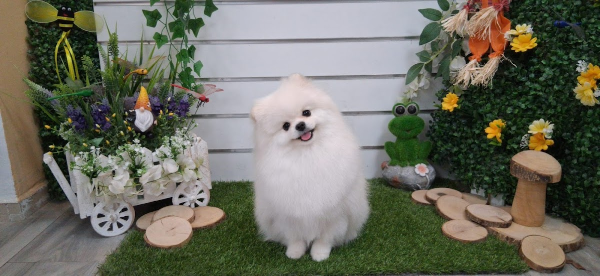

En Chic Can lo tratan con la calma y el cariño que se merece. 🐾
Bichones, malteses, perros mayores o de piel delicada — cada corte, con paciencia y mimo, y un peque que sale tranquilo y contento.



En Chic Can no hay prisas ni cadena de montaje. Hay tiempo para cada perro: el que viene por primera vez con cuatro meses, el cachorro nervioso y también el peludo de 16 años que necesita manos suaves.
Familias de todo Valencia — y de fuera, desde Canet — vuelven cada quince días porque sus perros salen guapos, tranquilos y contentos. Se nota cuando a quien te atiende le gustan de verdad los animales.
— Lorena, Chic Can
Cada raza y cada piel pide lo suyo. Cuéntanos cómo es tu peque por WhatsApp y lo dejamos perfecto sin estresarlo.
El corte que le va a tu raza, hecho con calma. Bichón, maltés o mestizo — sale precioso y bien arreglado, cuidando cada detalle.
Baño, secado y un acabado suave que huele de maravilla. Oídos, uñas y todos esos detalles que tu perro agradece, sin agobios.
Primera peluquería del cachorro o perro mayor que necesita ternura. Manos suaves, paciencia y todo el cariño que hace falta.
Lo notarás en cómo entra — y en cómo sale.
Se nota que les gustan los animales. Tu perro sale súper contento — y eso, en una peluquería canina, lo es todo.
Nada de cadena ni reloj en mano. Cada perro tiene su tiempo, también el más nervioso o el más mayor.
240 familias lo dejan por escrito en Google. Bichones malteses preciosos, perros mayores tratados con mimo: la prueba está en las reseñas.
Cada pelo y cada piel pide lo suyo. Conocen tu raza y la cuidan — desde el bichón maltés hasta el mestizo de pelo difícil.





Fotos reales de clientes reales de Chic Can — sí, todos recién guapos. 🐶
"Llevar a nuestro perrito de 16 años a esta peluquería ha sido la mejor decisión que podíamos tomar. Lo han dejado precioso, y tratado con mucho cuidado y cariño. ¡Salió súper contento y feliz!"
"Tengo un bichón maltés y me lo han dejado precioso. Lorena es un amor; aunque voy desde Canet y se me hace un poco lejos, no tengo dudas de volver."
"Lorena y su equipo son fantásticas. Cogieron a Otto con 4 meses, acaba de cumplir 5 años y lo llevamos cada 15 días… con eso está todo dicho."
"Llevamos a nuestro bichón maltés y estamos encantados. El trato ha sido súper bueno, se nota que les gustan los animales y tienen mucha paciencia. 🐶✨"
"Le han hecho un corte precioso, cuidando todo detalle. Se nota que trabajan con cariño y paciencia, porque salió tranquilo y feliz. 💕"
…y 235 reseñas más como estas.
Pide tu cita →¿Ya le va tocando un corte? Escríbenos por WhatsApp, cuéntanos cómo es y te buscamos hueco. Sin formularios, sin esperas — te respondemos en el día.
Pedir cita ahora⭐ 4,9 de 5 · 240 familias ya confían
Un mensaje de WhatsApp y listo. Nos cuentas cómo es tu perro (raza, edad, manías) y te confirmamos hueco en el día. Nada de formularios eternos.
Sí, y con especial cuidado. Hemos peluqueado perros de 16 años y cachorros en su primera vez. Vamos sin prisas y con manos suaves para que salga tranquilo.
Es de lo que más hacemos. Conocemos el corte que pide cada raza y cuidamos cada detalle para que tu peque salga precioso y bien arreglado.
En C/ Ernesto Che Guevara, 12, 46920 València. Vienen familias de toda la zona — y de fuera, como desde Canet — porque merece la pena el trato.
Depende de la raza y el pelo, pero muchas familias vuelven cada 15 días. Te asesoramos según tu perro para que esté siempre cómodo y guapo.
Escríbenos por WhatsApp y cuéntanos de tu perro. Te respondemos normalmente en minutos. 🐾
Escribir por WhatsApp